Verkefni 3: 3D prentun og 3D skönnun
Tölvustudd framleiðsla (Vél608G)
Markmið verkefnisins
Í þessu verkefni átti annars vegar að hanna módel fyrir 3D prentun sem ekki væri hægt að framkvæma með frádráttar framleiðslu. Max 100g af plasti samkvæmt slicer. Hins vegar átti að 3D skanna einhvern hlut, t.d. með photogrammetríu.
3D skönnun
Til þess að leysa þetta verkefni byrjaði ég á því að ná í appið Qlone í símann minn, en það var gefið sem dæmi um 3D skönnunar app í verkefnalýsingunni á Canvas. Í því appi þarf þarf að borga til þess að fá að 3D skanna, eða prenta út einhversskonar mottu og ég ákvað því að reyna finna eitthvað annað. Ég fór þá í app store í símanum og leitaði af 3D scanner. Appið Scaniverse kom upp og ákvað ég að prófa það. Það var mjög einfalt í notkun, þar sem maður þurfti bara að taka stutt myndband af hlutnum sjálfum en niðurstöðurnar fannst mér ekki alveg nógu góðar.
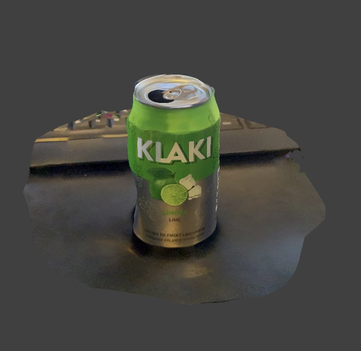Ég ákvað þá að prófa appið Polycam þar sem vinur minn Arnór Daði hafði notað það og virkaði nokkuð vel. Þetta virkaði svipað og scaniverse nema í staðinn fyrir upptöku voru teknar margar myndir af hlutnum.
Niðurstöðurnar voru nokkuð góðar, miðað við að þetta var gert með fríu appi í símanum. Til þess að raða myndunum hlið við hlið er hægt að nota þetta sem er að finna hér
3D prentun
Undirbúningsvinna
Eins og áður byrjaði ég á því að skoða verkefni hjá nemum fyrri ára fyrir innblástur. Eftir smá leit rakst ég á verkefnið hennar Helgu Maríu, en hún 3D prentaði tannbursta haldara. Mér fannst það mjög sniðug hugmynd og fór þá á netið í leit að fleiri dæmum um tannbursta haldara. Þessi fyrir neðan fannst mér líta vel út, auk þess ekki of flókinn.
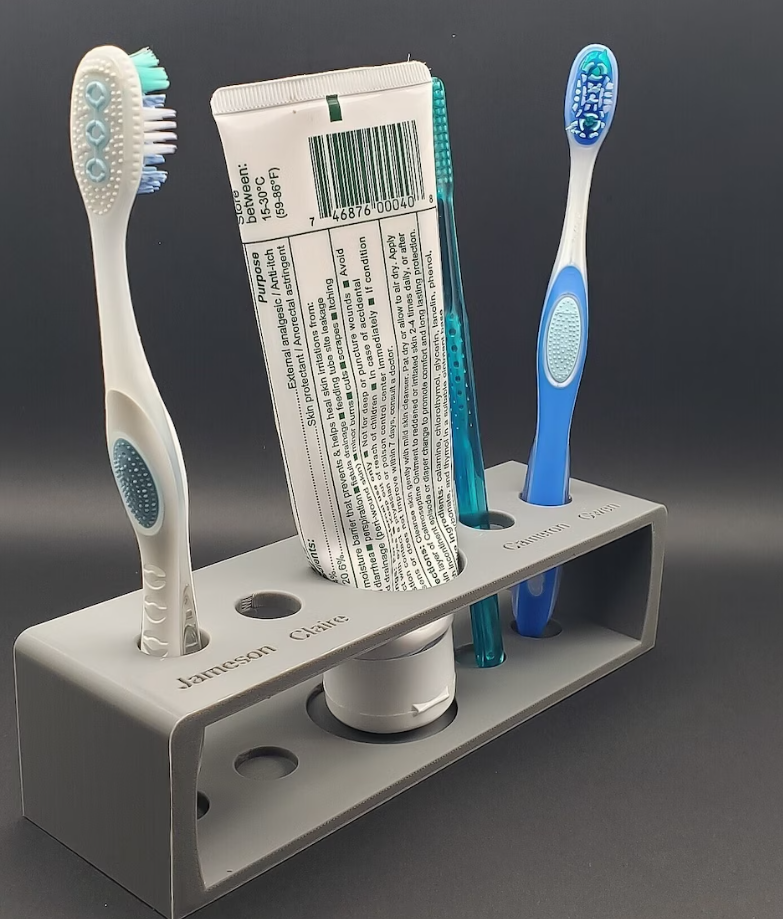Ég hugsaði mér þá að gera einhvern svipaðan en í staðinn vildi ég hafa þrjú pláss fyrir tannbursta fremst og fyrir aftan þau pláss fyrir tannkrem, eitthvað í líkingu við þetta (séð ofan frá):
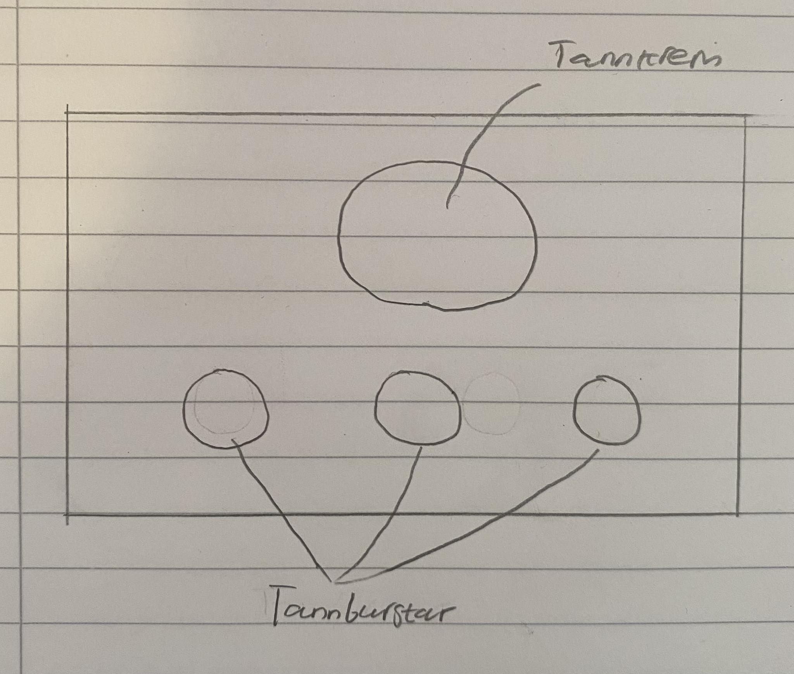Teikning í Fusion360
Teikningin í Fusion var nokkuð einföld. Ég byrjað á því að teikna tvo ferhyrninga með fillet á öllum hornum.
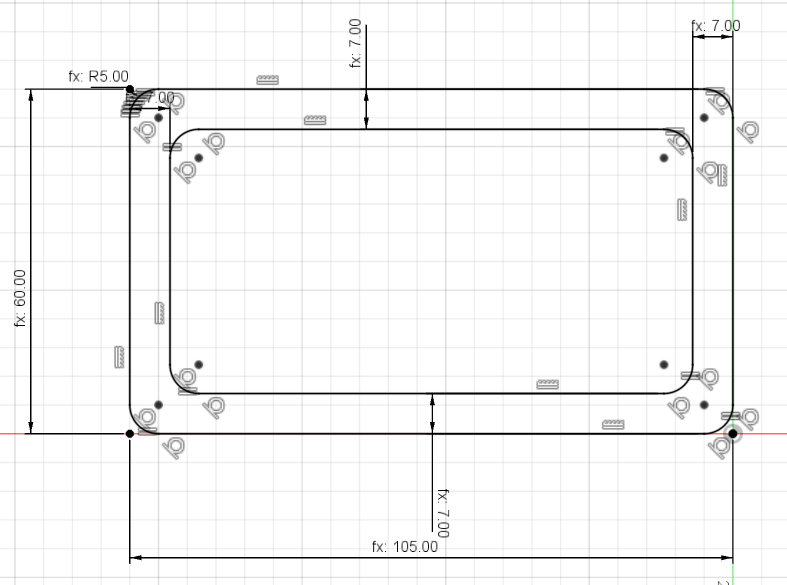Næst extrudaði ég það, þannig að ég var kominn með stykkið sjálft án gatanna. Til að þess að búa til götin, teiknaði ég einfaldelga bara einn hring fyrir tannbursta og einn hring fyrir tannkremið. Ég extrudaði það svo í gegn og aðeins inn í neðri partinn, þ.a. tannburstarnir og tennkremið haldist vel á sínum stað. Að lokum bjó ég til rectangular pattern fyrir tannbursta gatið til að mynda hin tvö götin. Hluturinn leit þá svona út:
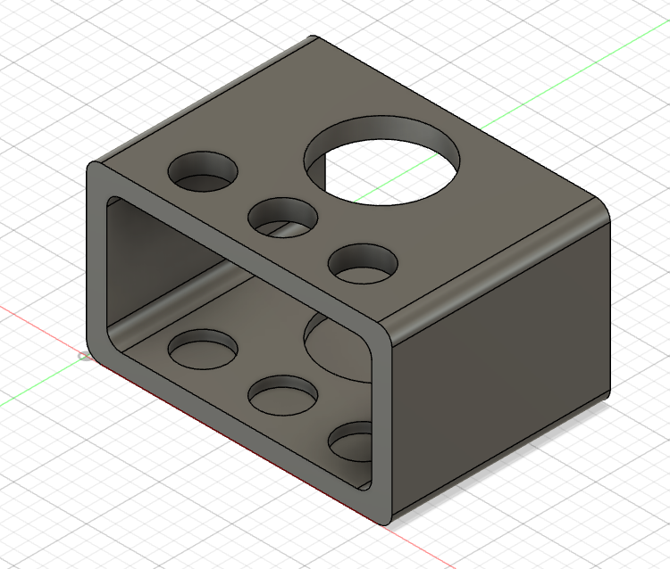Ég skoðaði líka aðeins að hafa 4 göt, þ.e. tvo göt sitthvoru megin við tannkremið eins og á myndinni efst, en þá var þetta orðið frekar langt og taldi ég því hitt vera hentugra. Einnig notaðist ég við parametra þegar ég teiknaði þetta því það voru einhverjar líkur á því að ég þyrfti að breyta stærðinni. Að lokum export-aði ég skrána í stl form
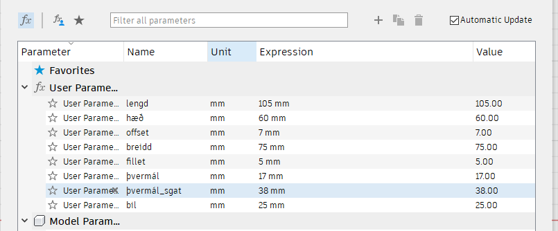Prusa slicer/Undirúningur fyrir 3D prentun
Næst var að ná í forritið Prusa slicer, en ég valdi að nota það frekar en Cura þar sem það var unnið með Prusa MK3+ prentara. Þar inni opnaði ég stl skrána af hlutnum og leit það þá svona út inn í Prusaslicer:
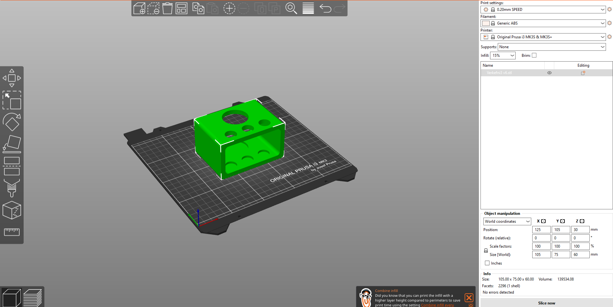Ég ákvað snúa hlutnum á hliðina þ.a. það væri sem minnst overhang.
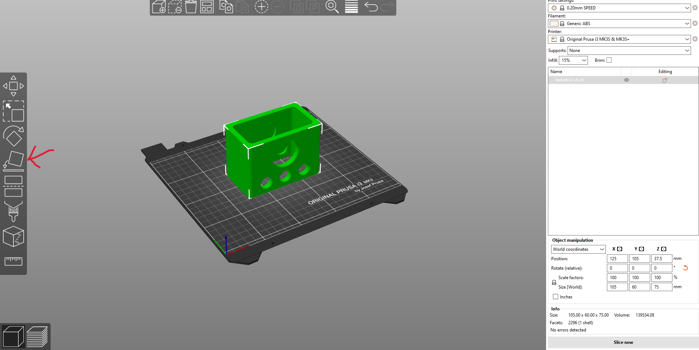Ég valdi svo none í supports og ýtti á slice now neðst í hægra horninu til að fá upplýsingar um prentunina
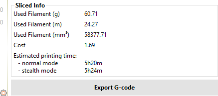Þar sást að prentunin muni taka 5 klst og 20 mínútur, sem er töluverður tími, og að þetta muni þurfa 60,71g af plasti. Áður en ég færi í það að prenta út allan hlutinn var mikilvægt að gera smá prufu á stöðum sem gætu verið viðkvæmir, eins og í kringum götin. Ég fór þá aftur í Fusion og teiknaði lítinn kassa með gati í.
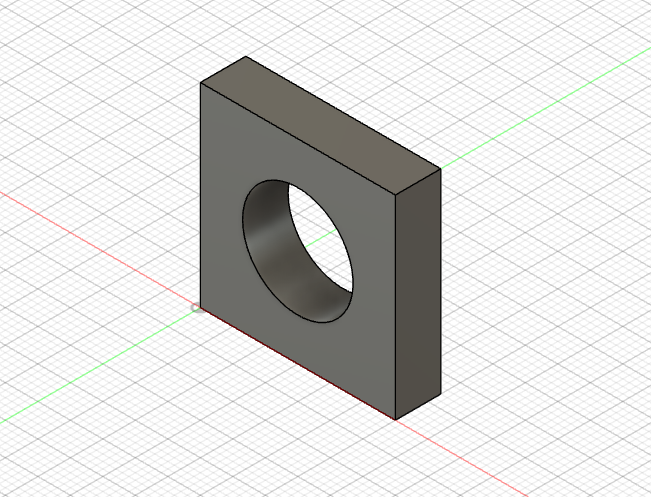Eins og áður exportaði ég þessu í stl skrá, opnaði í Prusa slicer og ýtti á slice now. Áður en ég get síðan prentað út prófunina, ýtti ég á export G-code og setti það inn á SD kort.
3D prentunin
Ég byrjaði á því að 3D prenta prófunina mína. Til þess að gera það setti ég SD kortið inn í prentarann og valdi rétta skrá. Að auki var sett smá lím á plötuna í 3D prentaranum svo þetta gangi betur. Eftir 39 mínútur var prófunin klár.
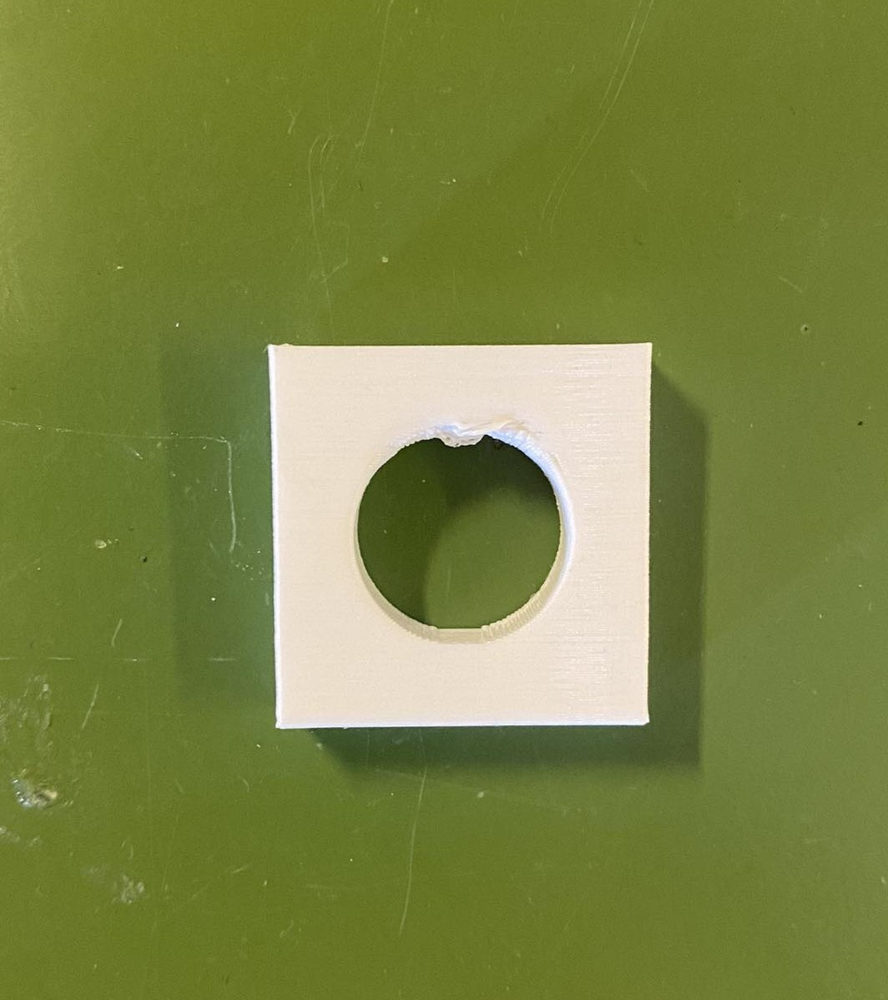Prófunin kom nokkuð vel út, það var smá óslétta þar sem overhangið er eins og mátti kannski búast við með engan stuðning en mögulega hægt að pússa það burt. Eina sem var þá eftir var að prenta út allan hlutinn minn. Eins og fyrir prufunina exportaði ég g-kóðanum og kom honum á SD kort. Prentunin átti eftir að taka 5 klst og 20 mínútur þ.a. ég fór heim, þar sem klukkan var í kringum 16. Daginn eftir mætti ég sótti hlutinn og prentunin hafði gengið vel.
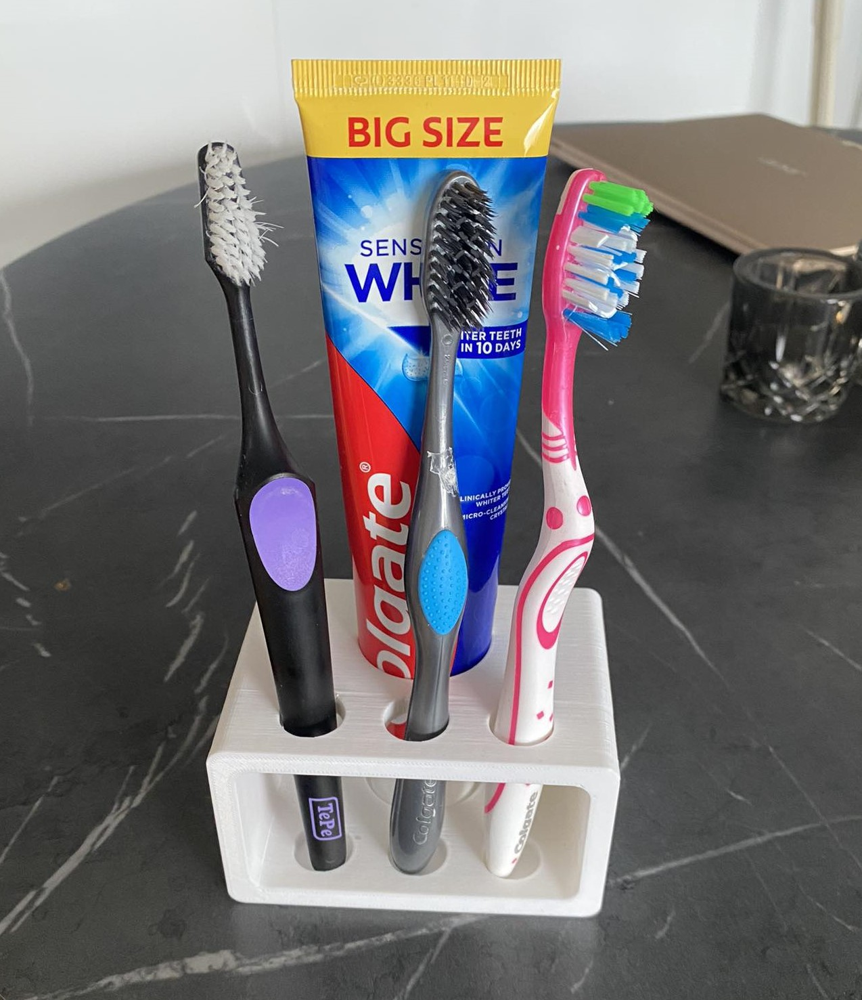Tannbursta haldarinn fannst mér koma vel út, það er smá óslétta inn í götunum eins og mátti búast við eftir prófunina, en það hefur þó engin áhrif á virknina. Tannburstarnir og tannkremið passa vel í götin og er ég því sáttur með þetta.
Vinnuálag
| Nr | Verkþáttur | Klukkutímar |
|---|---|---|
| 1 | Leit að hugmyndum | 1,5 |
| 2 | 3D skönnun | 2 |
| 3 | Vinna í Fusion360 | 3 |
| 4 | Undirbúningur og prófanir fyrir 3D prentun | 4 |
| 5 | Vefsíðugerð | 5,5 |
| Heildartími | 16 |